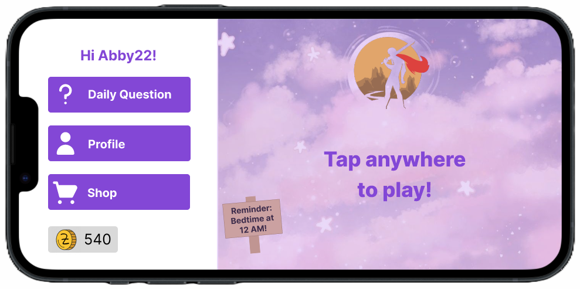
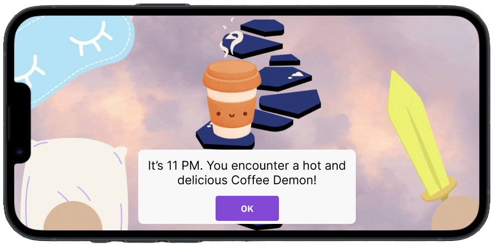
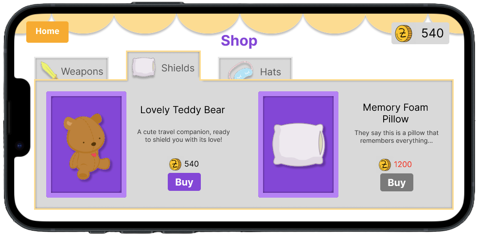

Solution
Create an educational game that helps students learn about sleep health through a fun and interactive RPG. SnoozeMaster allows players to adventure through the dreamverse and learn about sleep health through enemy encounters.
SnoozeMaster Homepage
- Main page of the application
- Links to all other features
- Reminder of target bedtime

Role-playing Game (RPG)
- Map of all levels
- Fight against sleep demons
- Gain new sleep facts from clearing levels

Daily Question Minigame
- Daily trivia question about sleep health
- Answer correctly for in-game currency (Z-coins)
- Playable once per day
Profile
- Find all saved sleep facts
- View currently equipped cosmetic skins
Wearable Connection
- Connect to wearable to sync sleep data
- Earn Z-coins for meeting sleep targets

Shop
- Buy cosmetic skins with earned Z-coins
- Currently offers weapons, shields, and hats

Product Demo Video
Watch our demo video below, from the perspective of a new user. Narration by me!